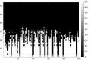
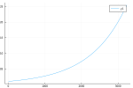
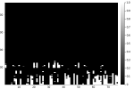
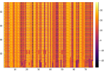
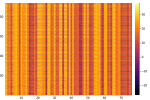

Spatiotemporal Panel Datasets
We often also need to missing data in spatiotemporal data. For this example, we'll use daily temperature values from major cities around the world.
TODO: Give a different workflow/example using a DataFrame.
using AxisKeys, Impute, NamedDims, Plots, Statistics, StatsBase
# So NamedDimsArray is the outer wrapper
AxisKeys.nameouter() = true
# Construct a KeyedArray of our dataset as we want to track gaps (or missing rows)
# in the source CSV data.
data = wrapdims(
Impute.dataset("test/table/temperature"),
:AverageTemperature,
:dt,
:City;
default=missing,
sort=true,
)
# Rename our dims
data = rename(data, :dt => :time, :City => :loc)2-dimensional NamedDimsArray(KeyedArray(...)) with keys:
↓ time ∈ 3239-element Vector{Dates.Date}
→ loc ∈ 100-element Vector{InlineStrings.String31}
And data, 3239×100 Matrix{Union{Missing, Float64}}:
String31("Abidjan") … String31("Xian")
Date("1743-11-01") missing missing
Date("1743-12-01") missing missing
Date("1744-01-01") missing missing
Date("1744-02-01") missing missing
Date("1744-03-01") missing … missing
Date("1744-04-01") missing missing
⋮ ⋱ ⋮
Date("2013-03-01") 29.129 10.11
Date("2013-04-01") 28.626 12.563
Date("2013-05-01") 27.652 … 18.979
Date("2013-06-01") 26.157 23.522
Date("2013-07-01") 24.951 25.251
Date("2013-08-01") 24.541 24.528
Date("2013-09-01") missing missingOkay, so let's take a look at how much temperature data is missing.
heatmap(ismissing.(data); color=:greys);/home/runner/.julia/packages/GR/cRdXQ/src/../deps/gr/bin/gksqt: error while loading shared libraries: libQt5Widgets.so.5: cannot open shared object file: No such file or directory connect: Connection refused GKS: can't connect to GKS socket application GKS: Open failed in routine OPEN_WS GKS: GKS not in proper state. GKS must be either in the state WSOP or WSAC in routine ACTIVATE_WS

So many cities are missing a lot of historical data. A common operation is to remove locations with too many missing historical observations. In our case, we also want to penalize observations closer to the present.
Let's start to define a set of exponential weights for our observations:
wv = eweights(1:length(data.time), 0.001)
plot(wv);/home/runner/.julia/packages/GR/cRdXQ/src/../deps/gr/bin/gksqt: error while loading shared libraries: libQt5Widgets.so.5: cannot open shared object file: No such file or directory connect: Connection refused GKS: can't connect to GKS socket application GKS: Open failed in routine OPEN_WS GKS: GKS not in proper state. GKS must be either in the state WSOP or WSAC in routine ACTIVATE_WS

Now we want to filter out locations (columns) according to those weights. For now, we'll say that a location should be removed if the weighted ratio exceeds 0.1.
data = Impute.filter(data; dims=:cols) do v
mratio = sum(wv[ismissing.(v)]) / sum(wv)
return mratio < 0.1
end2-dimensional NamedDimsArray(KeyedArray(...)) with keys:
↓ time ∈ 3239-element Vector{Dates.Date}
→ loc ∈ 76-element Vector{InlineStrings.String31}
And data, 3239×76 Matrix{Union{Missing, Float64}}:
String31("Ahmadabad") … String31("Xian")
Date("1743-11-01") missing missing
Date("1743-12-01") missing missing
Date("1744-01-01") missing missing
Date("1744-02-01") missing missing
Date("1744-03-01") missing … missing
Date("1744-04-01") missing missing
⋮ ⋱
Date("2013-03-01") 27.196 10.11
Date("2013-04-01") 30.762 12.563
Date("2013-05-01") 33.856 … 18.979
Date("2013-06-01") 31.099 23.522
Date("2013-07-01") 28.073 25.251
Date("2013-08-01") 27.512 24.528
Date("2013-09-01") missing missingOkay, so we removed almost 25% of the locations that didn't meet our missing data requirement. However, most of our observations from the 1700's are still mostly missing. Let's remove those rows that have more 50% of the locations missing.
data = Impute.filter(data; dims=:rows) do v
mratio = count(ismissing, v) / length(v)
return mratio < 0.5
end2-dimensional NamedDimsArray(KeyedArray(...)) with keys:
↓ time ∈ 2350-element Vector{Dates.Date}
→ loc ∈ 76-element Vector{InlineStrings.String31}
And data, 2350×76 Matrix{Union{Missing, Float64}}:
String31("Ahmadabad") … String31("Xian")
Date("1816-03-01") 24.87 missing
Date("1816-04-01") 29.427 missing
Date("1816-05-01") 32.624 missing
Date("1816-06-01") 30.632 missing
Date("1816-07-01") 26.727 … missing
Date("1816-08-01") 26.131 missing
⋮ ⋱
Date("2013-02-01") 22.726 2.362
Date("2013-03-01") 27.196 10.11
Date("2013-04-01") 30.762 … 12.563
Date("2013-05-01") 33.856 18.979
Date("2013-06-01") 31.099 23.522
Date("2013-07-01") 28.073 25.251
Date("2013-08-01") 27.512 24.528Now let's take a look at what data remains.
heatmap(ismissing.(data); color=:greys);/home/runner/.julia/packages/GR/cRdXQ/src/../deps/gr/bin/gksqt: error while loading shared libraries: libQt5Widgets.so.5: cannot open shared object file: No such file or directory connect: Connection refused GKS: can't connect to GKS socket application GKS: Open failed in routine OPEN_WS GKS: GKS not in proper state. GKS must be either in the state WSOP or WSAC in routine ACTIVATE_WS

Alright, we can work with the remaining missing values now. Now we could try simply imputing the values columnwise for each city using something like Impute.nocb
heatmap(Impute.nocb(data; dims=:cols));/home/runner/.julia/packages/GR/cRdXQ/src/../deps/gr/bin/gksqt: error while loading shared libraries: libQt5Widgets.so.5: cannot open shared object file: No such file or directory connect: Connection refused GKS: can't connect to GKS socket application GKS: Open failed in routine OPEN_WS GKS: GKS not in proper state. GKS must be either in the state WSOP or WSAC in routine ACTIVATE_WS

But, this looks rather crude and creates clear artifacts in the dataset. Since we suspect that observations in similar locations would have had similar recordings we could use Impute.svd or Impute.knn to find similarities across multiple locations.
data = Impute.knn(data; dims=:cols, k=4);
heatmap(data);/home/runner/.julia/packages/GR/cRdXQ/src/../deps/gr/bin/gksqt: error while loading shared libraries: libQt5Widgets.so.5: cannot open shared object file: No such file or directory connect: Connection refused GKS: can't connect to GKS socket application GKS: Open failed in routine OPEN_WS GKS: GKS not in proper state. GKS must be either in the state WSOP or WSAC in routine ACTIVATE_WS

This method appears to have removed the artifacts found with the basic NOCB method alone. Now we have a complete dataset ready for downstream processing :)